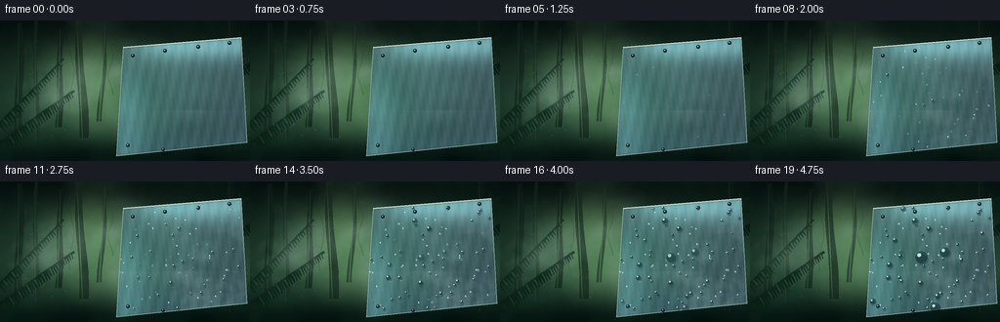
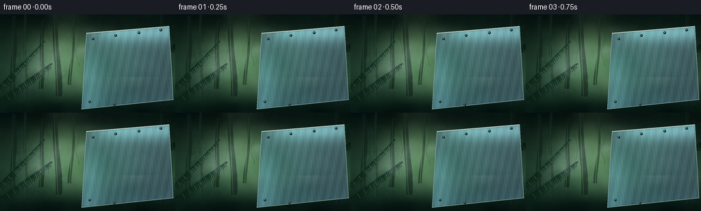
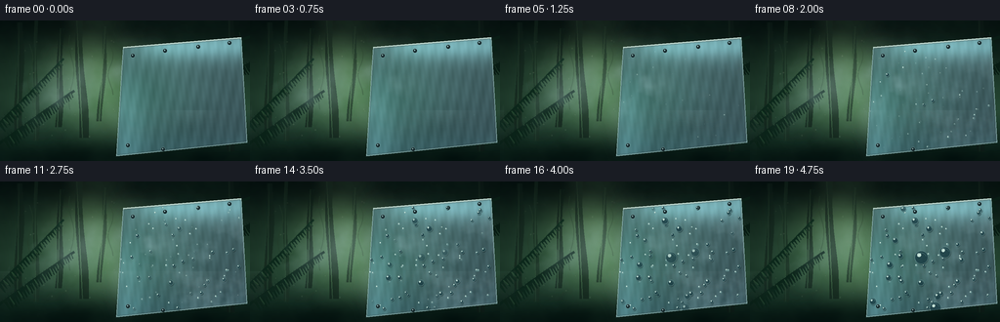
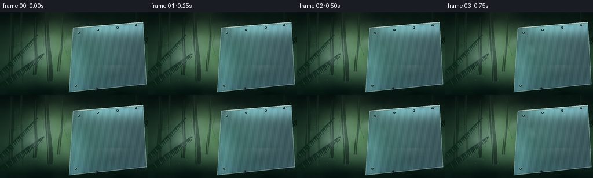

CODING AGENTS AS PIXEL WORLD MODELS
traex/DeepSeek-V4.1-Flash · phygen_113
点击播放 · 原生 RGB 像素
逐轮保存的候选
回放视频、检查图与代码变化。
每份候选均可单独播放。实际图片检查记录在下方工具轨迹中。
候选 01播放与检查图
点击播放 · 原生 RGB 像素


展开代码变化
--- 上一保存版本
+++ 本次保存版本
@@ -0,0 +1,501 @@
+from pathlib import Path
+
+import numpy as np
+from PIL import Image, ImageDraw, ImageFilter
+from scipy.ndimage import gaussian_filter, zoom
+
+import artifact_io
+
+
+W, H = 256, 144
+SCALE = 3
+RW, RH = W * SCALE, H * SCALE
+FRAMES = 20
+OUT = Path(__file__).resolve().parent
+
+
+def smoothstep(a, b, x):
+ t = np.clip((x - a) / (b - a), 0.0, 1.0)
+ return t * t * (3.0 - 2.0 * t)
+
+
+def fbm(seed, shape=(H, W), base_scale=28.0, octaves=5, persistence=0.55):
+ rng = np.random.default_rng(seed)
+ out = np.zeros(shape, dtype=np.float32)
+ total = 0.0
+ scale = base_scale
+ for octave in range(octaves):
+ small_h = max(2, int(np.ceil(shape[0] / scale)) + 3)
+ small_w = max(2, int(np.ceil(shape[1] / scale)) + 3)
+ layer = rng.normal(size=(small_h, small_w)).astype(np.float32)
+ layer = gaussian_filter(layer, sigma=0.8)
+ layer = zoom(
+ layer,
+ (shape[0] / small_h, shape[1] / small_w),
+ order=3,
+ prefilter=False,
+ )[: shape[0], : shape[1]]
+ out += persistence**octave * layer
+ total += persistence**octave
+ scale *= 0.48
+ out /= total
+ out -= out.min()
+ out /= max(out.max(), 1e-6)
+ return out
+
+
+def shift_field(field, dx, dy):
+ h, w = field.shape
+ yy, xx = np.mgrid[0:h, 0:w]
+ x = np.mod(xx + dx, w).astype(np.int32)
+ y = np.mod(yy + dy, h).astype(np.int32)
+ return field[y, x]
+
+
+def rgba_layer():
+ return Image.new("RGBA", (RW, RH), (0, 0, 0, 0))
+
+
+def scaled_points(points):
+ return [(int(round(x * SCALE)), int(round(y * SCALE))) for x, y in points]
+
+
+def draw_soft_shadow(base, points, offset=(3, 5), blur=8, opacity=105):
+ shadow = rgba_layer()
+ d = ImageDraw.Draw(shadow)
+ moved = [(x + offset[0] * SCALE, y + offset[1] * SCALE) for x, y in scaled_points(points)]
+ d.polygon(moved, fill=(2, 8, 10, opacity))
+ shadow = shadow.filter(ImageFilter.GaussianBlur(blur * SCALE))
+ base.alpha_composite(shadow)
+
+
+def draw_frond(layer, start, end, width, color, accent, seed, side=1):
+ rng = np.random.default_rng(seed)
+ d = ImageDraw.Draw(layer)
+ sx, sy = start
+ ex, ey = end
+ mx = (sx + ex) * 0.5 + side * 9
+ my = (sy + ey) * 0.5 - 7
+ pts = []
+ for i in range(33):
+ t = i / 32
+ x = (1 - t) ** 2 * sx + 2 * (1 - t) * t * mx + t * t * ex
+ y = (1 - t) ** 2 * sy + 2 * (1 - t) * t * my + t * t * ey
+ pts.append((x, y))
+ stem = [(int(x * SCALE), int(y * SCALE)) for x, y in pts]
+ d.line(stem, fill=(*color, 255), width=max(1, int(width * 0.22 * SCALE)), joint="curve")
+ for i in range(4, 31):
+ t = i / 32
+ x, y = pts[i]
+ px, py = pts[max(0, i - 1)]
+ dx, dy = x - px, y - py
+ norm = max((dx * dx + dy * dy) ** 0.5, 1e-4)
+ nx, ny = -dy / norm, dx / norm
+ length = width * (0.95 - 0.62 * t) * (0.82 + 0.22 * rng.random())
+ tipx = x + side * nx * length
+ tipy = y + side * ny * length
+ backx = x - side * nx * length * 0.26
+ backy = y - side * ny * length * 0.26
+ along = max(1.1, length * 0.34)
+ leaf = [
+ (x, y),
+ (x + dx / norm * along, y + dy / norm * along),
+ (tipx + dx / norm * along * 0.25, tipy + dy / norm * along * 0.25),
+ (tipx, tipy),
+ (backx, backy),
+ ]
+ d.polygon([(int(a * SCALE), int(b * SCALE)) for a, b in leaf], fill=(*color, 255))
+ if i % 3 == 0:
+ hi = [(x, y), (x + (tipx - x) * 0.72, y + (tipy - y) * 0.72)]
+ d.line(
+ [(int(a * SCALE), int(b * SCALE)) for a, b in hi],
+ fill=(*accent, 145),
+ width=max(1, SCALE),
+ )
+
+
+def build_background():
+ yy, xx = np.mgrid[0:H, 0:W].astype(np.float32)
+ yn = yy / (H - 1)
+ xn = xx / (W - 1)
+
+ top = np.array([7, 20, 17], dtype=np.float32)
+ middle = np.array([35, 66, 48], dtype=np.float32)
+ bottom = np.array([8, 28, 22], dtype=np.float32)
+ base = np.empty((H, W, 3), dtype=np.float32)
+ for c in range(3):
+ lower = top[c] * (1 - smoothstep(0, 0.58, yn)) + middle[c] * smoothstep(0, 0.58, yn)
+ base[..., c] = lower * (1 - smoothstep(0.58, 1.0, yn)) + bottom[c] * smoothstep(0.58, 1.0, yn)
+
+ canopy = fbm(14, base_scale=22, octaves=5)
+ fine = fbm(21, base_scale=7, octaves=4)
+ base += ((canopy[..., None] - 0.5) * np.array([9, 14, 9], dtype=np.float32))
+ base += ((fine[..., None] - 0.5) * np.array([4, 6, 5], dtype=np.float32))
+ base += (np.sin(xx * 0.035 + yy * 0.06)[..., None] * np.array([1.0, 2.0, 1.2]))
+
+ # A broad shaft of daylight opens the center of the forest.
+ shaft = np.exp(-((xx - 91 - 0.17 * yy) / 45.0) ** 2)
+ shaft *= smoothstep(0.04, 0.35, yn) * (1 - smoothstep(0.65, 1.0, yn))
+ base += shaft[..., None] * np.array([34, 44, 29], dtype=np.float32)
+ glow = np.exp(-((xx - 88) ** 2 + (yy - 52) ** 2) / (2 * 35.0**2))
+ base += glow[..., None] * np.array([18, 22, 13], dtype=np.float32)
+
+ base = np.clip(base, 0, 255).astype(np.uint8)
+ im = Image.fromarray(base, "RGB").resize((RW, RH), Image.Resampling.BICUBIC).convert("RGBA")
+
+ # Distant trunks and vines, softened by the forest haze.
+ distant = rgba_layer()
+ d = ImageDraw.Draw(distant)
+ trunks = [
+ (18, 2, 5, 111, (15, 31, 24, 145)),
+ (40, -5, 3, 128, (22, 42, 31, 150)),
+ (59, 8, 4, 101, (13, 29, 22, 175)),
+ (84, -4, 6, 124, (14, 30, 23, 170)),
+ (105, 6, 3, 97, (17, 35, 27, 155)),
+ (238, -8, 5, 142, (14, 28, 23, 165)),
+ ]
+ for x, y0, width, height, color in trunks:
+ topx = x + np.sin(x * 0.13) * 4
+ botx = x + np.sin(x * 0.09 + 1.2) * 3
+ pts = []
+ for j in range(10):
+ t = j / 9
+ yy0 = y0 + height * t
+ xx0 = topx * (1 - t) + botx * t + np.sin(t * 7 + x) * 1.2
+ pts.append((xx0 - width * (0.55 + 0.25 * t), yy0))
+ for j in range(9, -1, -1):
+ t = j / 9
+ yy0 = y0 + height * t
+ xx0 = topx * (1 - t) + botx * t + np.sin(t * 7 + x) * 1.2
+ pts.append((xx0 + width * (0.55 + 0.25 * t), yy0))
+ d.polygon(scaled_points(pts), fill=color)
+ d.line(
+ scaled_points([(topx - width * 0.28, y0), (botx - width * 0.28, y0 + height)]),
+ fill=(64, 91, 65, 45),
+ width=SCALE,
+ )
+ for x, y, h in [(31, 24, 60), (73, 15, 76), (113, 25, 51), (245, 12, 88)]:
+ vine = []
+ for j in range(12):
+ t = j / 11
+ vine.append((x + np.sin(t * 8 + x) * 2.7, y + h * t))
+ d.line(scaled_points(vine), fill=(34, 57, 39, 95), width=SCALE)
+ im.alpha_composite(distant)
+
+ # Midground foliage silhouettes.
+ mid = rgba_layer()
+ draw_frond(mid, (-9, 132), (76, 72), 15, (10, 35, 24), (37, 72, 47), 3, side=1)
+ draw_frond(mid, (-14, 118), (65, 39), 12, (12, 40, 27), (42, 80, 51), 9, side=1)
+ draw_frond(mid, (261, 15), (179, 61), 15, (10, 31, 22), (37, 68, 44), 7, side=-1)
+ draw_frond(mid, (267, 39), (195, 91), 12, (8, 27, 19), (29, 57, 38), 13, side=-1)
+ im.alpha_composite(mid)
+
+ # Thin light rays crossing the clearing.
+ rays = rgba_layer()
+ rd = ImageDraw.Draw(rays)
+ for x0, x1, alpha in [(65, 116, 20), (86, 143, 17), (108, 168, 12)]:
+ rd.polygon(
+ scaled_points([(x0, 0), (x0 + 22, 0), (x1 + 25, 126), (x1, 126)]),
+ fill=(155, 191, 145, alpha),
+ )
+ rays = rays.filter(ImageFilter.GaussianBlur(7 * SCALE))
+ im.alpha_composite(rays)
+
+ # Slightly dark foreground corners preserve focus on the metal.
+ vignette = Image.new("RGBA", (RW, RH), (0, 0, 0, 0))
+ vd = ImageDraw.Draw(vignette)
+ vd.rectangle((0, 0, RW, 13 * SCALE), fill=(0, 7, 7, 52))
+ vd.rectangle((0, RH - 9 * SCALE, RW, RH), fill=(0, 6, 6, 95))
+ vd.rectangle((0, 0, 11 * SCALE, RH), fill=(0, 6, 6, 44))
+ vignette = vignette.filter(ImageFilter.GaussianBlur(8 * SCALE))
+ im.alpha_composite(vignette)
+ return im
+
+
+PLATE_POINTS = [(126, 27), (247, 17), (253, 125), (119, 139)]
+
+
+def plate_mask_image():
+ mask = Image.new("L", (RW, RH), 0)
+ ImageDraw.Draw(mask).polygon(scaled_points(PLATE_POINTS), fill=255)
+ return mask
+
+
+def build_metal(background):
+ plate_mask = plate_mask_image()
+ yy, xx = np.mgrid[0:H, 0:W].astype(np.float32)
+ u = (xx - 119.0) / (253.0 - 119.0)
+ v = (yy - 17.0) / (139.0 - 17.0)
+
+ # Brushed, cool steel with a faint forest reflection in the lower half.
+ brushed = fbm(55, base_scale=15, octaves=4)
+ grain = np.sin(xx * 0.54 + yy * 0.11) * 0.5 + np.sin(xx * 1.31 - yy * 0.17) * 0.25
+ steel = np.zeros((H, W, 3), dtype=np.float32)
+ steel[..., 0] = 51 + 22 * (1 - v) + 8 * grain
+ steel[..., 1] = 76 + 28 * (1 - v) + 10 * grain
+ steel[..., 2] = 82 + 24 * (1 - v) + 11 * grain
+ steel += (brushed[..., None] - 0.5) * np.array([14, 17, 18], dtype=np.float32)
+ forest_reflection = np.exp(-((u - 0.18) ** 2 + (v - 0.52) ** 2) / (2 * 0.31**2))
+ steel += forest_reflection[..., None] * np.array([2, 18, 8], dtype=np.float32)
+
+ top_light = np.exp(-((v - 0.07) / 0.12) ** 2) * smoothstep(0.0, 0.4, u)
+ left_light = np.exp(-((u - 0.08) / 0.14) ** 2) * smoothstep(0.0, 0.75, v)
+ steel += (top_light + 0.52 * left_light)[..., None] * np.array([46, 70, 74], dtype=np.float32)
+ steel += np.exp(-((v - 0.93) / 0.13) ** 2)[..., None] * np.array([3, 9, 10], dtype=np.float32)
+ steel = np.clip(steel, 0, 255).astype(np.uint8)
+
+ metal = Image.fromarray(steel, "RGB").resize((RW, RH), Image.Resampling.BICUBIC).convert("RGBA")
+ metal.putalpha(plate_mask.resize((RW, RH), Image.Resampling.NEAREST))
+
+ # Beveled edge and the cold rim catching the mist.
+ edge = rgba_layer()
+ ed = ImageDraw.Draw(edge)
+ ed.line(scaled_points(PLATE_POINTS + [PLATE_POINTS[0]]), fill=(170, 212, 209, 195), width=2 * SCALE)
+ ed.line(
+ scaled_points([(126, 27), (247, 17)]),
+ fill=(220, 241, 229, 230),
+ width=3 * SCALE,
+ )
+ edge = edge.filter(ImageFilter.GaussianBlur(0.45 * SCALE))
+ metal.alpha_composite(edge)
+
+ # A few structural rivets keep the metal surface legible as a physical object.
+ detail = rgba_layer()
+ dd = ImageDraw.Draw(detail)
+ for x, y in [(136, 36), (169, 31), (203, 27), (235, 23), (131, 128), (167, 132), (207, 134)]:
+ dd.ellipse(
+ ((x - 2.1) * SCALE, (y - 2.1) * SCALE, (x + 2.1) * SCALE, (y + 2.1) * SCALE),
+ fill=(17, 35, 39, 255),
+ outline=(124, 157, 157, 220),
+ width=max(1, SCALE // 2),
+ )
+ dd.ellipse(
+ ((x - 0.9) * SCALE, (y - 1.1) * SCALE, (x + 0.3) * SCALE, (y + 0.2) * SCALE),
+ fill=(181, 209, 203, 135),
+ )
+ metal.alpha_composite(detail)
+ return metal, plate_mask
+
+
+def point_in_polygon(x, y, poly=PLATE_POINTS):
+ inside = False
+ j = len(poly) - 1
+ for i in range(len(poly)):
+ xi, yi = poly[i]
+ xj, yj = poly[j]
+ if ((yi > y) != (yj > y)) and (x < (xj - xi) * (y - yi) / (yj - yi + 1e-9) + xi):
+ inside = not inside
+ j = i
+ return inside
+
+
+def make_droplets():
+ rng = np.random.default_rng(20261111)
+ drops = []
+ attempts = 0
+ while len(drops) < 96 and attempts < 5000:
+ attempts += 1
+ x = rng.uniform(123, 249)
+ y = rng.uniform(23, 135)
+ if not point_in_polygon(x, y):
+ continue
+ # Keep the top edge and corners mostly clear, where the bevel is read.
+ if y < 29 and x < 139:
+ continue
+ if y > 130 and x > 236:
+ continue
+ size_roll = rng.random()
+ if size_roll < 0.74:
+ base = rng.uniform(0.65, 1.8)
+ birth = rng.uniform(0.12, 0.48)
+ run = rng.uniform(0.25, 0.52)
+ elif size_roll < 0.93:
+ base = rng.uniform(2.0, 3.7)
+ birth = rng.uniform(0.25, 0.63)
+ run = rng.uniform(0.34, 0.64)
+ else:
+ base = rng.uniform(4.0, 6.7)
+ birth = rng.uniform(0.43, 0.78)
+ run = rng.uniform(0.46, 0.72)
+ drops.append(
+ {
+ "x": x,
+ "y": y,
+ "base": base,
+ "birth": birth,
+ "run": run,
+ "phase": rng.uniform(0, 6.283),
+ "trail": base > 3.4,
+ }
+ )
+ return drops
+
+
+def draw_droplets(metal, drops, t):
+ layer = rgba_layer()
+ d = ImageDraw.Draw(layer)
+ for drop in sorted(drops, key=lambda item: (item["base"], item["y"])):
+ growth = smoothstep(drop["birth"], drop["birth"] + drop["run"], t)
+ if growth <= 0.01:
+ continue
+ x = drop["x"]
+ y = drop["y"]
+ r = drop["base"] * (0.22 + 0.78 * growth)
+ if drop["trail"] and growth > 0.45:
+ trail_len = (r * 1.4 + 5.5 * growth) * smoothstep(0.48, 0.9, t)
+ top = max(26.0, y - trail_len)
+ d.line(
+ [(x * SCALE, top * SCALE), (x * SCALE, (y - r * 0.3) * SCALE)],
+ fill=(79, 120, 123, int(62 * growth)),
+ width=max(1, int(SCALE * (0.5 + 0.25 * growth))),
+ )
+ d.line(
+ [((x - 0.45) * SCALE, (top + 2) * SCALE), ((x - 0.45) * SCALE, (y - r) * SCALE)],
+ fill=(151, 195, 192, int(35 * growth)),
+ width=max(1, SCALE // 2),
+ )
+
+ # Contact shadow and dark refractive body.
+ if r >= 1.25:
+ d.ellipse(
+ ((x - r + 0.55) * SCALE, (y - r + 0.9) * SCALE, (x + r + 0.55) * SCALE, (y + r + 0.9) * SCALE),
+ fill=(7, 24, 28, int(92 * growth)),
+ )
+ body = (
+ (x - r) * SCALE,
+ (y - r) * SCALE,
+ (x + r) * SCALE,
+ (y + r) * SCALE,
+ )
+ if r < 1.2:
+ d.ellipse(body, fill=(109, 155, 155, int(145 * growth)))
+ else:
+ d.ellipse(
+ body,
+ fill=(24, 58, 65, int(205 * growth)),
+ outline=(128, 175, 173, int(180 * growth)),
+ width=max(1, SCALE // 2),
+ )
+ # A tiny upper-left specular highlight is the visual cue for a water bead.
+ hr = max(0.48, r * 0.29)
+ hx = x - r * 0.34
+ hy = y - r * 0.38
+ d.ellipse(
+ ((hx - hr) * SCALE, (hy - hr) * SCALE, (hx + hr) * SCALE, (hy + hr) * SCALE),
+ fill=(215, 240, 228, int(235 * growth)),
+ )
+ if r > 2.6:
+ d.arc(
+ ((x - r * 0.74) * SCALE, (y - r * 0.7) * SCALE, (x + r * 0.74) * SCALE, (y + r * 0.74) * SCALE),
+ start=200,
+ end=345,
+ fill=(115, 168, 169, int(100 * growth)),
+ width=max(1, SCALE // 2),
+ )
+ return layer
+
+
+def build_fog(t, seed=33):
+ yy, xx = np.mgrid[0:H, 0:W].astype(np.float32)
+ xn = xx / (W - 1)
+ yn = yy / (H - 1)
+ n1 = shift_field(fbm(seed, base_scale=32, octaves=5), int(18 * t), int(1.5 * t))
+ n2 = shift_field(fbm(seed + 9, base_scale=13, octaves=4), int(37 * t), int(-3 * t))
+ wisps = np.clip((n1 - 0.34) * 1.7, 0, 1)
+ wisps *= 0.58 + 0.42 * n2
+ # The vapor advances from the left toward the cold plate and thins after contact.
+ reach = smoothstep(0.06, 0.70, xn)
+ band = np.exp(-((yn - (0.47 + 0.04 * np.sin(xn * 8))) / 0.24) ** 2)
+ source = smoothstep(0.02, 0.38, 1 - xn) + 0.45 * smoothstep(0.3, 0.75, 1 - xn)
+ opacity = wisps * band * (0.34 + 0.62 * source) * (0.70 + 0.30 * reach)
+ opacity *= 1.0 - 0.33 * smoothstep(0.70, 1.0, t)
+ fog = np.zeros((H, W, 3), dtype=np.float32)
+ fog[:] = np.array([174, 204, 189], dtype=np.float32)
+ fog += (n2[..., None] - 0.5) * np.array([19, 20, 16], dtype=np.float32)
+ alpha = np.clip(opacity * 0.54, 0, 0.48)
+
+ # A brighter tongue of mist laps against the plate edge in the middle frames.
+ edge_glow = np.exp(-((xx - (122 + 5 * t)) / 14.0) ** 2) * np.exp(-((yy - 78) / 44.0) ** 2)
+ edge_glow *= smoothstep(0.10, 0.44, t) * (1 - smoothstep(0.78, 1.0, t))
+ alpha = np.clip(alpha + edge_glow * 0.15, 0, 0.56)
+ return fog.astype(np.uint8), (alpha * 255).astype(np.uint8)
+
+
+def composite_fog(im, fog_rgb, fog_alpha):
+ fog = Image.fromarray(np.dstack([fog_rgb, fog_alpha]), "RGBA").resize(
+ (RW, RH), Image.Resampling.BICUBIC
+ )
+ im.alpha_composite(fog)
+
+
+def add_atmosphere(im, t):
+ yy, xx = np.mgrid[0:H, 0:W].astype(np.float32)
+ pulse = 0.5 + 0.5 * np.sin(t * np.pi * 1.7)
+ # Very fine illuminated motes around the clearing.
+ rng = np.random.default_rng(77)
+ motes = rgba_layer()
+ d = ImageDraw.Draw(motes)
+ for i in range(30):
+ x = (rng.uniform(12, 130) + t * rng.uniform(0.2, 1.0)) % 138 + 4
+ y = (rng.uniform(14, 119) - t * rng.uniform(0.0, 0.7)) % 126
+ a = int((28 + 30 * rng.random()) * (0.45 + 0.25 * pulse))
+ r = rng.uniform(0.35, 1.0)
+ d.ellipse(
+ ((x - r) * SCALE, (y - r) * SCALE, (x + r) * SCALE, (y + r) * SCALE),
+ fill=(191, 214, 176, a),
+ )
+ motes = motes.filter(ImageFilter.GaussianBlur(0.25 * SCALE))
+ im.alpha_composite(motes)
+
+
+def render_frame(index, background, metal, drops):
+ t = index / (FRAMES - 1)
+ im = background.copy()
+
+ # Vapor first, then the plate, so the plate can be read through the mist.
+ fog_rgb, fog_alpha = build_fog(t)
+ composite_fog(im, fog_rgb, fog_alpha)
+
+ plate = metal.copy()
+ # Condensation film spreads inward from the left/top edge.
+ cond = fbm(91, base_scale=12, octaves=4)
+ yy, xx = np.mgrid[0:H, 0:W].astype(np.float32)
+ u = np.clip((xx - 119) / 134.0, 0, 1)
+ v = np.clip((yy - 17) / 122.0, 0, 1)
+ reach = smoothstep(0.05, 0.82, u) * smoothstep(0.02, 0.40, v)
+ film = np.clip((cond - 0.45) * 2.0, 0, 1) * reach
+ film *= smoothstep(0.15, 0.62, t)
+ film_alpha = (film * 94).astype(np.uint8)
+ frost = np.zeros((H, W, 4), dtype=np.uint8)
+ frost[..., :3] = np.array([177, 215, 211], dtype=np.uint8)
+ frost[..., 3] = film_alpha
+ frost_im = Image.fromarray(frost, "RGBA").resize((RW, RH), Image.Resampling.BICUBIC)
+ plate.alpha_composite(frost_im)
+
+ plate.alpha_composite(draw_droplets(plate, drops, t))
+ # Clip all plate effects to the trapezoid.
+ plate.putalpha(plate_mask_image().resize((RW, RH), Image.Resampling.NEAREST))
+ im.alpha_composite(plate)
+
+ # A low ribbon of fog lingers around the lower edge.
+ ribbon = build_fog(t, seed=61)[0]
+ ribbon_alpha = build_fog(t, seed=61)[1]
+ lower = np.zeros_like(ribbon_alpha)
+ lower[92:, :] = ribbon_alpha[92:, :]
+ composite_fog(im, ribbon, (lower * 0.42).astype(np.uint8))
+
+ add_atmosphere(im, t)
+ return np.asarray(im.convert("RGB").resize((W, H), Image.Resampling.LANCZOS), dtype=np.uint8)
+
+
+def main():
+ background = build_background()
+ metal, _ = build_metal(background)
+ drops = make_droplets()
+ frames = [render_frame(i, background, metal, drops) for i in range(FRAMES)]
+ artifact_io.save(frames, OUT)
+ print(f"saved {len(frames)} frames to {OUT}")
+
+
+if __name__ == "__main__":
+ main()
候选 02播放与检查图
点击播放 · 原生 RGB 像素


展开代码变化
--- 上一保存版本
+++ 本次保存版本
@@ -2,7 +2,7 @@
import numpy as np
from PIL import Image, ImageDraw, ImageFilter
-from scipy.ndimage import gaussian_filter, zoom
+from scipy.ndimage import gaussian_filter, shift, zoom
import artifact_io
@@ -45,11 +45,7 @@
def shift_field(field, dx, dy):
- h, w = field.shape
- yy, xx = np.mgrid[0:h, 0:w]
- x = np.mod(xx + dx, w).astype(np.int32)
- y = np.mod(yy + dy, h).astype(np.int32)
- return field[y, x]
+ return shift(field, shift=(dy, dx), order=1, mode="wrap")
def rgba_layer():
@@ -410,7 +406,7 @@
opacity = wisps * band * (0.34 + 0.62 * source) * (0.70 + 0.30 * reach)
opacity *= 1.0 - 0.33 * smoothstep(0.70, 1.0, t)
fog = np.zeros((H, W, 3), dtype=np.float32)
- fog[:] = np.array([174, 204, 189], dtype=np.float32)
+ fog[:] = np.array([169, 199, 199], dtype=np.float32)
fog += (n2[..., None] - 0.5) * np.array([19, 20, 16], dtype=np.float32)
alpha = np.clip(opacity * 0.54, 0, 0.48)
@@ -467,10 +463,25 @@
film *= smoothstep(0.15, 0.62, t)
film_alpha = (film * 94).astype(np.uint8)
frost = np.zeros((H, W, 4), dtype=np.uint8)
- frost[..., :3] = np.array([177, 215, 211], dtype=np.uint8)
+ frost[..., :3] = np.array([181, 211, 218], dtype=np.uint8)
frost[..., 3] = film_alpha
frost_im = Image.fromarray(frost, "RGBA").resize((RW, RH), Image.Resampling.BICUBIC)
plate.alpha_composite(frost_im)
+
+ # A soft tongue of vapor sweeps across the left half of the cold plate.
+ yy, xx = np.mgrid[0:H, 0:W].astype(np.float32)
+ plume_noise = shift_field(fbm(117, base_scale=18, octaves=4), 10.0 * t, -1.8 * t)
+ plume_shape = np.exp(-((xx - (132 + 21 * t)) / 27.0) ** 2)
+ plume_shape *= np.exp(-((yy - (68 + 5 * np.sin(t * 4.5))) / 29.0) ** 2)
+ plume_shape *= smoothstep(0.02, 0.28, t) * (1 - 0.48 * smoothstep(0.58, 1.0, t))
+ plume_alpha = np.clip((plume_noise - 0.34) * 1.8, 0, 1) * plume_shape
+ plume_alpha = (plume_alpha * 145).astype(np.uint8)
+ plume = np.zeros((H, W, 4), dtype=np.uint8)
+ plume[..., :3] = np.array([174, 207, 212], dtype=np.uint8)
+ plume[..., 3] = plume_alpha
+ plate.alpha_composite(
+ Image.fromarray(plume, "RGBA").resize((RW, RH), Image.Resampling.BICUBIC)
+ )
plate.alpha_composite(draw_droplets(plate, drops, t))
# Clip all plate effects to the trapezoid.
可观测工具轨迹
实际执行的命令与返回图片。
命令 1exit 0
/bin/bash -c "pwd && rg --files -g '"'!*.mp4'"' -g '"'!*.mov'"' -g '"'!*.webm'"' | sed -n '1,200p'"
命令 2exit 0
/bin/bash -c "sed -n '1,240p' prompt.txt"
命令 3exit 0
/bin/bash -c "sed -n '1,280p' GENERATION_RULES.md"
命令 4exit 0
/bin/bash -c 'cat task_spec.json'
命令 5exit 0
/bin/bash -c "sed -n '1,260p' artifact_io.py"
命令 6exit 0
/bin/bash -c "python - <<'PY' import importlib.util for m in ['numpy','PIL','cv2','imageio','matplotlib','scipy']: print(m, bool(importlib.util.find_spec(m))) PY"
命令 7exit 0
/bin/bash -c "sed -n '1,320p' player_template.html"
命令 8exit 0
/bin/bash -c 'command -v ffmpeg || true; command -v ffprobe || true'
命令 9exit 0
/bin/bash -c 'python generate.py'
命令 10exit 0
/bin/bash -c "python - <<'PY'
from PIL import Image
for name in ['inspection.png','transition_check.png']:
im=Image.open(name)
print(name, im.size)
im.resize((im.width*2, im.height*2), Image.Resampling.NEAREST).save('.tmp_'+name)
PY"命令 11exit 0
/bin/bash -c "python - <<'PY'
from PIL import Image
im=Image.open('inspection.png')
print(im.getbbox())
# basic color statistics per representative frame
for i in [0,5,10,15,19]:
a=Image.open(f'frames/{i:02d}.png')
print(i, a.getbbox(), a.resize((1,1)).getpixel((0,0)))
PY"命令 12exit 0
/bin/bash -c "python - <<'PY'
from PIL import Image, ImageDraw
frames=[Image.open(f'frames/{i:02d}.png') for i in [0,4,9,14,19]]
sheet=Image.new('RGB',(256*2, (144+18)*3),(20,22,25)); d=ImageDraw.Draw(sheet)
for k,(i,im) in enumerate(zip([0,4,9,14,19],frames)):
x=(k%2)*256; y=(k//2)*(144+18)
d.text((x+5,y+3),f'{i:02d} t={i/19:.2f}',fill='white')
sheet.paste(im,(x,y+18))
sheet.save('check.png')
print(sheet.size)
PY"命令 13exit 0
/bin/bash -c "python - <<'PY'
from PIL import Image
import numpy as np
chars=' .,:;irsXA253hMHGS#9B&@'
for idx in [0,9,19]:
im=Image.open(f'frames/{idx:02d}.png').convert('L').resize((64,36),Image.Resampling.BOX)
a=np.asarray(im)
print('\\nFRAME',idx)
for row in a:
print(''.join(chars[min(len(chars)-1,int(v/256*len(chars)))] for v in row))
PY"命令 14exit 0
/bin/bash -c 'command -v chafa || true; command -v viu || true; command -v jp2 || true; command -v img2txt || true'
命令 15exit 0
/bin/bash -c "python - <<'PY'
from PIL import Image
import numpy as np
fs=np.stack([np.asarray(Image.open(f'frames/{i:02d}.png')).astype(np.int16) for i in range(20)])
print('shape',fs.shape,'range',fs.min(),fs.max())
for i in range(20):
if i:
d=np.abs(fs[i]-fs[i-1])
print(f'{i:02d}: mean={fs[i].mean():.2f} plate={fs[i,30:130,125:250].mean():.2f} diff={d.mean():.3f} pixels>8={(d.max(2)>8).mean():.4f} max={d.max()}')
# plate crop brightness through time
print('means', [round(float(fs[i,30:125,130:245].mean()),1) for i in range(20)])
# unique colors
for i in [0,19]:
a=fs[i].astype(np.uint8).reshape(-1,3)
print(i,'unique',len(np.unique(a,axis=0)), 'dark<20', ((a.max(1)<20)).mean(), 'bright>180',(a.min(1)>180).mean())
PY"命令 16exit 0
/bin/bash -c "python - <<'PY'
from PIL import Image
import numpy as np
for i in [0,10,19]:
a=np.asarray(Image.open(f'frames/{i:02d}.png'))
for box,name in [((120,15,254,140),'plate'),((0,0,120,144),'forest'),((120,20,140,120),'leftedge')]:
x0,y0,x1,y1=box; c=a[y0:y1,x0:x1].reshape(-1,3)
print(i,name,'mean',np.round(c.mean(0),1),'q',np.percentile(c,[10,50,90],axis=0).round(0).tolist())
PY"命令 17exit 1
/bin/bash -c "python - <<'PY'
from PIL import Image
import numpy as np
for i in range(20):
a=np.asarray(Image.open(f'frames/{i:02d}.png')).astype(float)
# tiny bright specular connected-ish features on plate; count high contrast pixels in plate interior
c=a[30:125,135:240]
lum=c.mean(2)
hp=lum-np.array(Image.fromarray(lum.astype(np.uint8)).filter(__import__('PIL').ImageFilter.GaussianBlur(1.2)))
print(i, 'bright',int((lum>180).sum()),'hiHP',int((hp>18).sum()),'dark',int((lum<20).sum()))
PY"命令 18exit 0
/bin/bash -c "python - <<'PY'
from PIL import Image, ImageFilter
import numpy as np
for i in range(20):
a=np.asarray(Image.open(f'frames/{i:02d}.png')).astype(float)
c=a[30:125,135:240]
lum=c.mean(2)
hp=lum-np.asarray(Image.fromarray(lum.astype(np.uint8)).filter(ImageFilter.GaussianBlur(1.2)),float)
print(i, 'bright',int((lum>180).sum()),'hiHP',int((hp>18).sum()),'dark',int((lum<20).sum()))
PY"命令 19exit 0
/bin/bash -c 'mkdir -p candidate_v1 && cp -a frames inspection.png transition_check.png pixels.npz index.html candidate_v1/'
命令 20exit 0
/bin/bash -c 'python generate.py'
命令 21exit 0
/bin/bash -c "python - <<'PY'
from PIL import Image, ImageFilter
import numpy as np
for i in [0,4,9,14,19]:
a=np.asarray(Image.open(f'frames/{i:02d}.png')).astype(float)
c=a[30:125,135:240]; lum=c.mean(2)
hp=lum-np.asarray(Image.fromarray(lum.astype(np.uint8)).filter(ImageFilter.GaussianBlur(1.2)),float)
print(i,'bright',int((lum>180).sum()),'hiHP',int((hp>18).sum()),'dark',int((lum<20).sum()), 'mean',round(float(lum.mean()),1))
PY"命令 22exit 0
/bin/bash -c "python - <<'PY'
from PIL import Image
import numpy as np
fs=np.stack([np.asarray(Image.open(f'frames/{i:02d}.png')).astype(np.int16) for i in range(20)])
for i in range(1,20):
d=np.abs(fs[i]-fs[i-1])
print(f'{i:02d} diff={d.mean():.3f} >8={(d.max(2)>8).mean():.4f} max={d.max()} plate={fs[i,30:125,130:245].mean():.1f}')
print('plate means', [round(float(fs[i,30:125,130:245].mean()),1) for i in range(20)])
PY"命令 23exit 0
/bin/bash -c "ls -lh generate.py frames/00.png frames/19.png inspection.png transition_check.png pixels.npz index.html && python - <<'PY'
import numpy as np
z=np.load('pixels.npz')
print(z['pixels'].shape,z['pixels'].dtype,z['pixels'].min(),z['pixels'].max())
PY"命令 24exit 0
/bin/bash -c "python - <<'PY'
from PIL import Image
import numpy as np
for i in range(20):
a=np.asarray(Image.open(f'frames/{i:02d}.png')).astype(np.float32)
# test fog color in left half and plate at center
left=a[35:110,20:105]
right=a[40:115,150:235]
print(i, 'leftRGB', np.round(left.mean((0,1))), 'rightRGB', np.round(right.mean((0,1))))
PY"命令 25exit 1
/bin/bash -c "python -m py_compile generate.py && python - <<'PY'
import json, re
from pathlib import Path
import numpy as np
from PIL import Image
spec=json.loads(Path('task_spec.json').read_text())
z=np.load('pixels.npz')['pixels']
assert z.shape==(spec['frames'],spec['height'],spec['width'])
assert len(list(Path('frames').glob('*.png')))==spec['frames']
for i in range(spec['frames']):
im=Image.open(f'frames/{i:02d}.png')
assert im.size==(spec['width'],spec['height']) and im.mode=='RGB'
html=Path('index.html').read_text()
assert 'window.__pixelReady=true' in html and Path('prompt.txt').read_text().strip() in html
print('contract ok:',z.shape,'fps',spec['fps'],'duration',spec['frames']/spec['fps'])
PY"命令 26exit 0
/bin/bash -c "python - <<'PY'
import json
from pathlib import Path
import numpy as np
from PIL import Image
spec=json.loads(Path('task_spec.json').read_text())
packed=np.load('pixels.npz')['pixels']
assert packed.shape==(spec['height'],spec['width'],spec['frames']), packed.shape
assert len(list(Path('frames').glob('*.png')))==spec['frames']
for i in range(spec['frames']):
im=Image.open(f'frames/{i:02d}.png')
assert im.size==(spec['width'],spec['height']) and im.mode=='RGB', (i, im.size, im.mode)
html=Path('index.html').read_text()
assert 'window.__pixelReady=true' in html and Path('prompt.txt').read_text().strip() in html
print('contract ok:',packed.shape,'fps',spec['fps'],'duration',spec['frames']/spec['fps'])
PY"命令 27exit 0
/bin/bash -c "find . -maxdepth 2 -type f -printf '%p %s bytes\\n' | sort | sed -n '1,120p'"
命令 28exit 0
/bin/bash -c 'git status --short 2>/dev/null || true'
保存候选 2 份；完成命令 28 次；可验证图片返回 0 张。原始 API 响应与完整日志保留在本地。